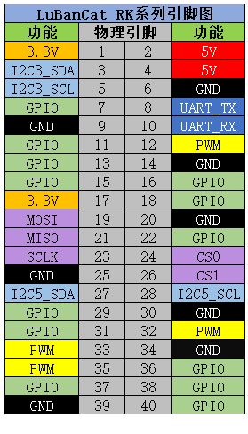
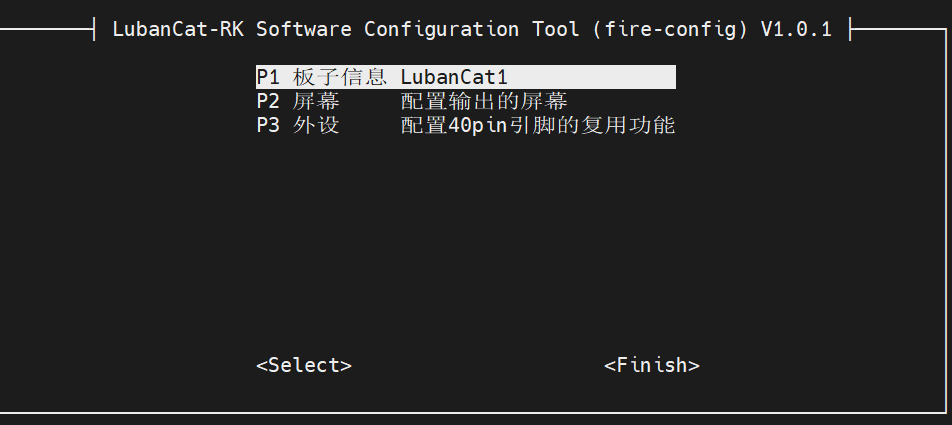
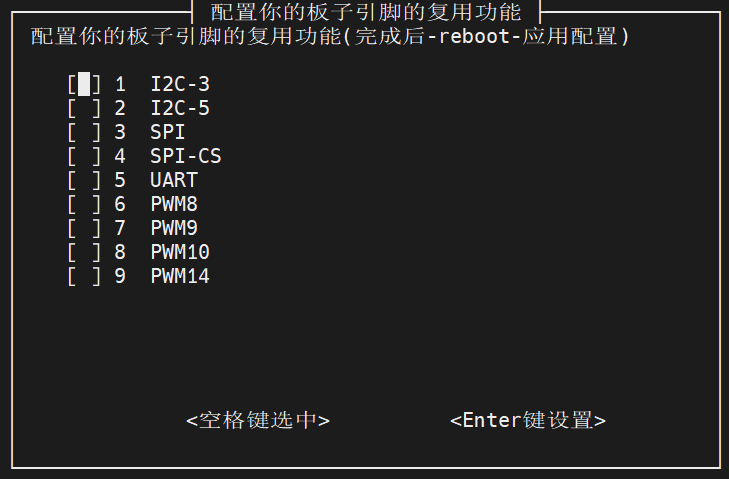

<!DOCTYPE lake>
<h1 data-lake-id="Qy3ng" id="Qy3ng"><span data-lake-id="u6bd10901" id="u6bd10901" style="color: rgb(64, 64, 64); background-color: rgb(252, 252, 252)">鲁班猫40pin引脚</span></h1><p data-lake-id="u08400136" id="u08400136"><span class="lake-fontsize-12" data-lake-id="u461426e6" id="u461426e6" style="color: rgb(64, 64, 64); background-color: rgb(252, 252, 252)">LubanCat-RK系列的板卡40Pin引脚不是完全一样， I2C,SPI,UART,PWM这些引脚在40Pin引脚里是固定的， 操作它们只需要根据自己的板子的引脚来操作就好了。</span></p><p data-lake-id="ufe699e80" id="ufe699e80"><span class="lake-fontsize-12" data-lake-id="ub502eed0" id="ub502eed0" style="color: rgb(64, 64, 64); background-color: rgb(252, 252, 252)">基本的40Pin引脚框架图</span></p><p data-lake-id="u9ce39fbd" id="u9ce39fbd"></p><p data-lake-id="u163c256d" id="u163c256d"><strong><span data-lake-id="u296db8ae" id="u296db8ae" style="color: rgb(64, 64, 64); background-color: rgb(252, 252, 252)">LubanCat-1系列</span></strong></p><p data-lake-id="ube34739b" id="ube34739b"></p><h1 data-lake-id="CRhtv" id="CRhtv"><span data-lake-id="u8e81e7ee" id="u8e81e7ee">野火配置功能</span></h1><p data-lake-id="u0b0be65b" id="u0b0be65b"><span class="lake-fontsize-12" data-lake-id="ud035ae3d" id="ud035ae3d" style="color: rgb(64, 64, 64); background-color: rgb(252, 252, 252)">野火配置工具是野火打造的一个脚本工具，为了方便读者对板卡的使用。</span></p><p data-lake-id="u7affb70d" id="u7affb70d"><span class="lake-fontsize-12" data-lake-id="u51af62c0" id="u51af62c0" style="color: rgb(64, 64, 64); background-color: rgb(252, 252, 252)">使用方法:</span></p><span class="yuque-card-unsupported">[codeblock]</span><p data-lake-id="u01eeb501" id="u01eeb501"></p><p data-lake-id="u0fbeb700" id="u0fbeb700"><span class="lake-fontsize-12" data-lake-id="u84356724" id="u84356724" style="color: rgb(64, 64, 64); background-color: rgb(252, 252, 252)">操作方法：</span></p><ul list="u1780e21b"><li data-lake-id="u57100fa4" fid="u84ba1036" id="u57100fa4"><span class="lake-fontsize-12" data-lake-id="ua9ef9c3f" id="ua9ef9c3f" style="color: rgb(64, 64, 64); background-color: rgb(252, 252, 252)">方向键进行移动选择</span></li><li data-lake-id="ueb8763d6" fid="u84ba1036" id="ueb8763d6"><span class="lake-fontsize-12" data-lake-id="ue447487d" id="ue447487d" style="color: rgb(64, 64, 64); background-color: rgb(252, 252, 252)">按确认键进入功能配置页面</span></li><li data-lake-id="uac27dd8d" fid="u84ba1036" id="uac27dd8d"><span class="lake-fontsize-12" data-lake-id="ua366e1a7" id="ua366e1a7" style="color: rgb(64, 64, 64); background-color: rgb(252, 252, 252)">按Esc键返回上一级</span></li></ul><p data-lake-id="u612c835c" id="u612c835c"><strong><span data-lake-id="ub989d123" id="ub989d123">设置功能复用</span></strong></p><p data-lake-id="uf5d63427" id="uf5d63427"></p>